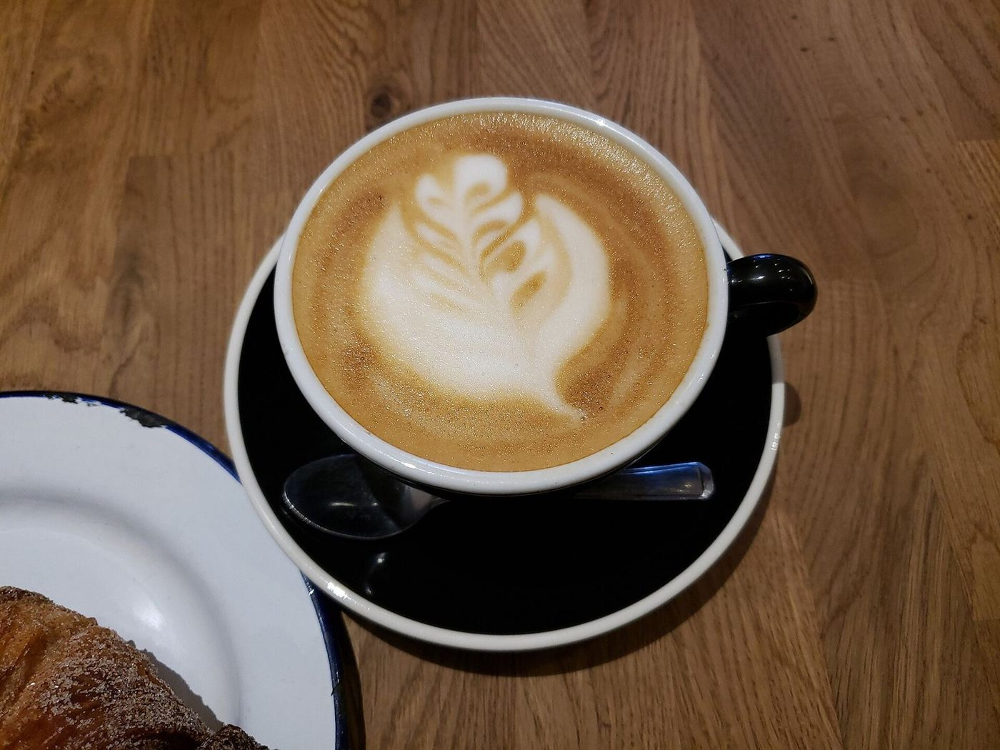

カフェ / 千葉県我孫子市
サテンカーリ
トイボ
cafe
カフェ「cafe サテンカーリトイボ」のご案内ページです。営業時間やメニューなど、詳しいことは準備中。まずはInstagramをのぞいてみてください。
ガラスのコーヒーサーバーの六部位図
ギャラリー(イメージ)
コーヒーとパンの写真



写真はコーヒーとパンのイメージです。お店のものではなく、お店で提供している商品を示すものでもありません。
制作側の連想
ガラスのコーヒーサーバーを、配置図にしてみる
このサイトは、ガラスでできたコーヒーサーバーを横から見た図にしたものとして作りました。蓋・注ぎ口・持ち手・目盛り・胴・底の六つの部位に番号をふり、上の図と並べています。制作側の連想で、お店の理念・由来とは無関係です。実際の製品や、お店で使っている道具を示すものでもありません。
凡例
六つの部位
- 1蓋一番上にのる、口をふさぐ小さな丸い栓。
- 2注ぎ口傾けたときに、液体を細く出すためのくちばし状の縁。
- 3持ち手手で支えるための、横に張り出した取っ手。
- 4目盛り量を見るために、側面に並ぶ短い線。
- 5胴ふくらんだ中心の、ガラスでできた容れ物の本体。
- 6底全体を支える、いちばん下の台のような部分。
ご案内
お店のこと(確認できたものだけ)
| 所在地 | 〒270-1119 千葉県我孫子市南新木3丁目14-22 |
|---|---|
| 電話 | 準備中 |
| 営業時間 | 準備中 |
| 定休日 | 準備中 |
| ご予約 | 準備中 |
| 駐車場 | 準備中 |
| SNS | Instagram @cafe_sateenkaari_toivo |